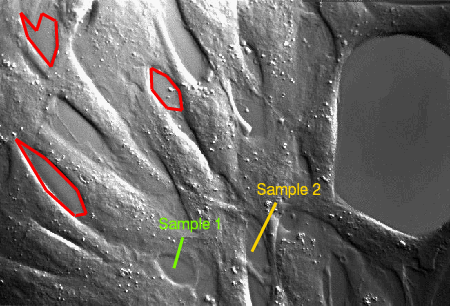

The POLYLINE function plots a series of lines as an annotation to an existing IDL graphic.

The following lines create the plot shown at the top of this topic.
im = IMAGE(FILEPATH('muscle.jpg', $
SUBDIRECTORY=['examples','data']))
line1 = POLYLINE([265,252], [100,55], /DATA, $
TARGET=im, COLOR=!COLOR.CHARTREUSE, THICK=3)
line2 = POLYLINE([400,365], [150,79], /DATA, $
TARGET=im, COLOR=!COLOR.GOLD, THICK=3)
t1 = TEXT(230,110,'Sample 1', /DATA, TARGET=im, $
COLOR=!COLOR.CHARTREUSE)
t2 = TEXT(372,160,'Sample 2', /DATA, TARGET=im, $
COLOR=!COLOR.GOLD)
x = [23,67,108,125,112,66,219,220,242,264,260,242,30,40, $
74,83,81,61,53]
y = [242,168,131,134,168,214,345,314,287,284,311,333,425, $
390,347,376,413,424,399]
conn = [7,0,1,2,3,4,5,0,7,6,7,8,9,10,11,6,8,12,13,14,15, $
16,17,18,12]
line3 = POLYLINE(x, y, CONNECTIVITY=conn, $
COLOR=!COLOR.red, THICK=3, /DATA)
See Annotations Examples for additional examples using the POLYLINE function.
graphic = POLYLINE(X, Y, [, Z] [, Format] )
The POLYLINE function returns a reference to the created annotation. Use the returned reference to manipulate the annotation after creation by changing properties or by calling methods.
The vertices of the polyline. The vectors X, Y, [and Z] must be of equal length. Unless Z is specified, a 2-D polyline is created.
A string that sets line format properties using short tokens to represent color, linestyle, and thickness values. For example, to create a solid red line with a thickness value of 2, you would use the following:
p = POLYLINE(x, y, '-r2')
Tokens in the Format string represent values of the LINESTYLE, COLOR, and THICK properties. From one to three tokens can be present, and the tokens may be in any order. Tokens are case sensitive. For more information about the syntax of the Format argument, see Formatting IDL Graphics Symbols and Lines.
Properties marked as (Init) are applied only during the initial creation of the graphic. All other properties can be set during creation, or retrieved or changed after creation.
By default anti-aliasing is used when drawing lines. Set this property to 0 to disable anti-aliasing.
A string or RGB vector that specifies the color of the polyline. The default is "black".
A vector defining individual polylines of the form: [n, i0, i1, ..., in-1, n, i0, i1, ..., in-1], where n is the number of vertices that define a polyline, and i0..in-1 are indices into a polyline vertex list. Connectivity allows you to insert multiple polylines with a single call. All of the polylines will share the same properties.
Set this property to 1 if the input arguments are specified in data coordinates. Setting this property inserts the polyline into the data space, otherwise the polyline is added to the annotation layer.
Set this property if values are specified in device coordinates (pixels) for the MARGIN and POSITION properties. (Normalized coordinates are the default for these properties.)
Set this property to 1 to hide the graphic. Set HIDE to 0 to show the graphic.
Set this property to an integer or string specifying the line style for the outline. The allowed values are:
| Index | String (case insensitive) |
|---|---|
| 0 | 'solid' or '-'(dash) |
| 1 | 'dot' or ':'(colon) |
| 2 | 'dash' or '--' (double dashes) |
| 3 | 'dash dot' or '-.' |
| 4 | 'dash dot dot dot' or '-:' |
| 5 | 'long dash' or '__' (double underscores) |
| 6 | 'none' or ' ' (space) |
A string that specifies the name of the graphic. The name can be used to retrieve the graphic using the brackets array notation. If NAME is not set then a default name is chosen based on the graphic type.
Set this property to 1 if the input arguments are specified in normalized ( [0, 1] ) coordinates (the default).
Set this property to the graphic object to use if points are specified in data coordinates. By default, the current graphic is used.
Set this property to a value between 0 and 10 that specifies the thickness of the polyline. A thickness of 0 displays a thin hairline on the chosen device. The default value is 1.
An integer between 0 and 100 that specifies the percent transparency of the polyline. The default value is 0.
Set this property to an IDL variable of any data type.
This property retrieves a reference to the WINDOW object which contains the graphic.
| 8.0 | Introduced |
| 8.1 |
Added the UVALUE property The THICK property was changed to accept a value between 0 and 10 Added the following methods: Delete, GetData, SetData |
PLOT, POLYGON, Using IDL Graphics
POLYLINE POLYLINE POLYLINE POLYLINE POLYLINE POLYLINE POLYLINE POLYLINE POLYLINE POLYLINE POLYLINE POLYLINE POLYLINE POLYLINE POLYLINE POLYLINE POLYLINE POLYLINE POLYLINE POLYLINE POLYLINE POLYLINE POLYLINE POLYLINE POLYLINE POLYLINE POLYLINE POLYLINE POLYLINE POLYLINE POLYLINE POLYLINE POLYLINE POLYLINE POLYLINE POLYLINE POLYLINE POLYLINE POLYLINE POLYLINE POLYLINE POLYLINE POLYLINE POLYLINE POLYLINE POLYLINE POLYLINE POLYLINE POLYLINE POLYLINE POLYLINE POLYLINE POLYLINE POLYLINE POLYLINE POLYLINE POLYLINE POLYLINE POLYLINE POLYLINE POLYLINE POLYLINE POLYLINE POLYLINE POLYLINE POLYLINE POLYLINE POLYLINE POLYLINE POLYLINE POLYLINE POLYLINE POLYLINE POLYLINE POLYLINE POLYLINE POLYLINE POLYLINE POLYLINE POLYLINE POLYLINE POLYLINE POLYLINE POLYLINE POLYLINE